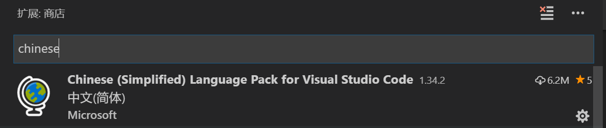
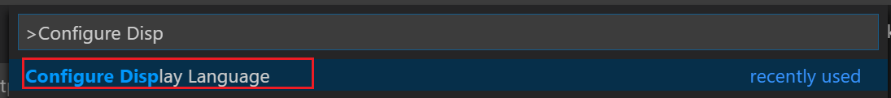

vscode常规设置
将 VSCode 设置成中文语言环境
初始安装时，使用的是英文包，所以界面菜单全是英文的。如果你想使用中文环境，可以以安装插件的方式去安装中文语言包。
步骤如如下：
- 进入拓展安装
- 安装指定插件
chinese Language Pack for Visual Studio Code

-
按要求重启 vscode。
-
如果第三步没有起作用（或者后期你又想回到英文的操作环境） 你可以手动切换：
（1）按键
ctrl+shift+p,调出命令面板，输入“configure display language”，选中这个命令。
 （2）然后，在弹出的下拉列表中，选择你刚才安装的语言包 。

- 值得注意的是，如果你升级了 vscode，好像它会自动退回到英文语言包（这一点我并不确定），这里你只需要通过
configure display language重新切换一次语言包就可以了。
纸上得来终觉浅，绝知此事要躬行